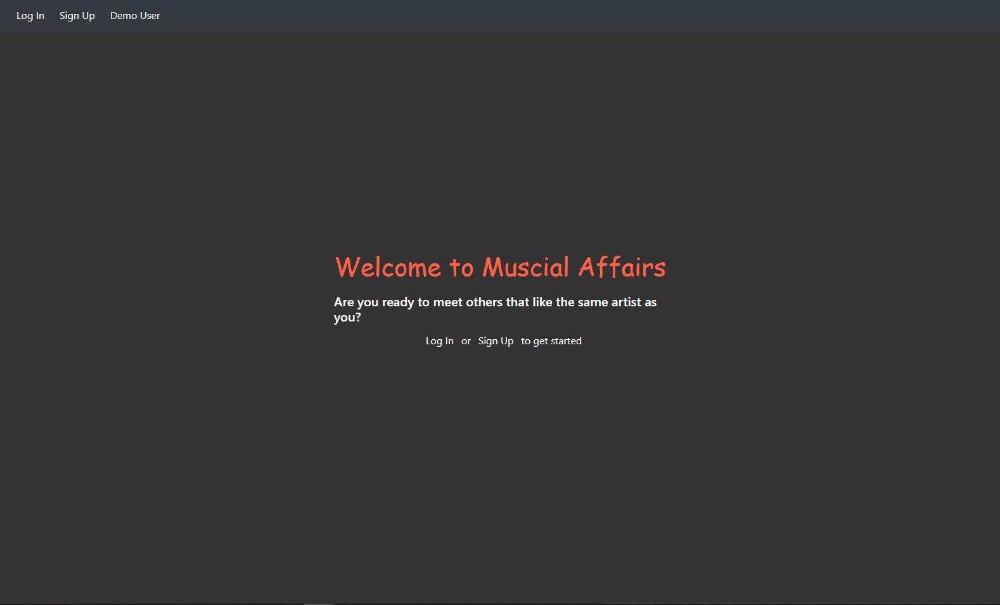

A Tinder-Like Clone
Musical-Affairs is a user-friendly website where people can create an account and search through our databse for a musical artist that they love. Our database uses 2 different API's to help increase the chances that the artist you search for comes back with a result and an image.

The search feature also comes with a handy "search for similar" feature where users can also see artist similar to the artist that they searched for.
And just in case you can no longer think of another artist that you may like, the app provides a random artist feature where a random artist shows up and you can decide wether you like that artist or not. Once decided, a different artist will appear.
This website was built using Flask in the backend and React Redux for the frontend. Users favorite artist are also stored in a customized database, so that users can login in the future and still be able to see their favorite artist.